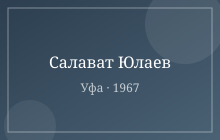
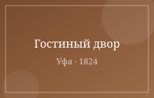
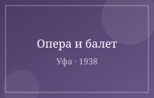
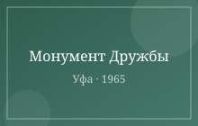
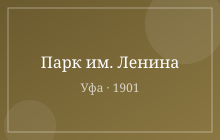

Лучшие виды на город открываются с смотровой площадки у Монумента Дружбы на закате.
Туристический центр: ул. Верхнеторговая площадь, 1.
Ежедневно с 10 до 20 часов.

Самая большая конная статуя России — 9,8 метра вместе с постаментом. Работы скульптора Сосланбека Тавасиева.

Торговые ряды первой половины XIX века в сердце Верхнеторговой площади, памятник архитектуры классицизма.

Один из старейших музыкальных театров страны, открыт в 1938 году. Здесь идут оперы и балеты на башкирском и русском языках.

35-метровый обелиск, посвященный присоединению Башкирии к Русскому государству, рядом — Музей археологии и этнографии.

Старейший парк города, заложенный в 1901 году: колесо обозрения, планетарий и тенистые аллеи вдоль Белой.
Наведите курсор на карточку.
Лабораторная работа №3. Позиционирование